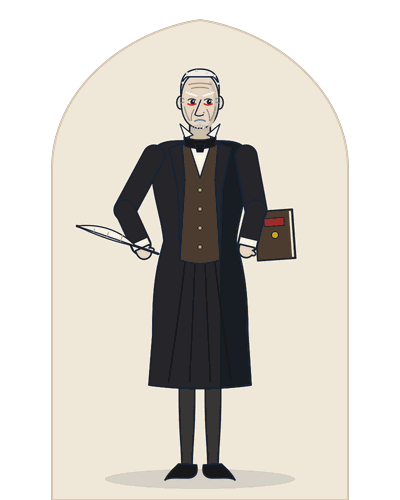

Free sample unit · A Christmas Carol study guide: Stave One, paragraphs 1 to 78: Marley was dead, and Scrooge in his counting-house
This is Unit 1 of the A Christmas Carol study guide, complete and free to read online: Stave One, paragraphs 1 to 78, with a plain modern English paragraph after every paragraph of Dickens and word notes, then a model critical note on Scrooge in Stave One, three short answers, a model context answer and five objective questions, as the book gives them, with the keys from the end of the book. The PDF sample holds the whole of Stave One, Units 1 and 2.

Unit 1 · Stave One, paragraphs 1 to 78
Marley Was Dead: Scrooge in His Counting-house
Stave One, paragraphs 1 to 78 · The counting-house, Christmas Eve
On Christmas Eve, Scrooge turns away his nephew, refuses the two gentlemen collecting for the poor, and grumbles at his clerk’s holiday.
Unit 1 · 78 paragraphs (2,932 words) · Essays 1, 3, 4, 10, 12
Ebenezer Scrooge, drawn for this book from the novel.
- The miser: “a squeezing, wrenching, grasping, scraping, clutching, covetous, old sinner!” (1.6).
- The nephew’s belief: Christmas is “a kind, forgiving, charitable, pleasant time” (1.25).
- The poor who “would rather die” should “decrease the surplus population.” (1.62).
Examiners ask
- Character sketch of Scrooge as Dickens presents him in Stave One. Answer: Critical note
- How do the opening paragraphs about Marley’s death set the tone of the story? Answer: Short answer 1
- Explain the “surplus population” speech with reference to the context. Answer: Context answer
Dickens builds Scrooge out of cold, then tests him three times.
Context
The Poor Law, the workhouse and the counting-house. The Poor Law Amendment Act of 1834 grouped parishes into Poor Law unions, and each union had a workhouse. These are the “Union workhouses” (1.52) Scrooge asks about: the places where, in his words, “those who are badly off must go” (1.60). The Treadmill was the treadwheel, a prison machine introduced in 1818 by Sir William Cubitt. Scrooge pairs it with the Poor Law (1.54). The 1840s, when the story was written, were called the “Hungry Forties”. A counting-house was an office for keeping accounts and doing business. Scrooge’s counting-house still carries the name of a dead partner, “Scrooge and Marley” (1.5), and his clerk copies letters in a cell beside it.
The text: Stave One, paragraphs 1 to 78 with modern English
Stave One, paragraphs 1 to 78, complete as the book prints them: every paragraph of the first edition with its number, a plain modern English paragraph after it, and word notes after each passage.
Marley was dead Stave One · Paragraphs 1 to 11
Stave I: Marley’s Ghost
The narrator tells us that Marley is dead, and shows us Scrooge, his cold and greedy partner.
MARLEY was dead: to begin with. There is no doubt whatever about that. The register of his burial was signed by the clergyman, the clerk, the undertaker, and the chief mourner. Scrooge signed it: and Scrooge’s name was good upon ’Change, for anything he chose to put his hand to. Old Marley was as dead as a door-nail.
Marley was dead, to begin with. There is no doubt at all about that. The record of his burial was signed by the clergyman, the clerk, the undertaker and the chief mourner. Scrooge signed it, and Scrooge’s name was trusted on the Exchange for anything he chose to sign. Old Marley was as dead as a door-nail.
Mind! I don’t mean to say that I know, of my own knowledge, what there is particularly dead about a door-nail. I might have been inclined, myself, to regard a coffin-nail as the deadest piece of ironmongery in the trade. But the wisdom of our ancestors is in the simile; and my unhallowed hands shall not disturb it, or the Country’s done for. You will therefore permit me to repeat, emphatically, that Marley was as dead as a door-nail.
Mind you! I do not mean to say that I know, from my own knowledge, what is especially dead about a door-nail. Left to myself, I might have thought a coffin-nail the deadest piece of iron goods in the trade. But the wisdom of our ancestors is in the saying, and my unholy hands shall not touch it, or the Country is finished. So you will allow me to repeat, firmly, that Marley was as dead as a door-nail.
Scrooge knew he was dead? Of course he did. How could it be otherwise? Scrooge and he were partners for I don’t know how many years. Scrooge was his sole executor, his sole administrator, his sole assign, his sole residuary legatee, his sole friend, and sole mourner. And even Scrooge was not so dreadfully cut up by the sad event, but that he was an excellent man of business on the very day of the funeral, and solemnised it with an undoubted bargain.
Did Scrooge know he was dead? Of course he did. How could it be otherwise? Scrooge and he were partners for I do not know how many years. Scrooge was his only executor, his only administrator, his only assign and his only heir to what was left. He was also his only friend and his only mourner. And even Scrooge was not so terribly upset by the sad event that he stopped being an excellent man of business. He celebrated the funeral by making a good deal that very day.
Words1 ’Change: the Exchange in London, where merchants met · 1 dead as a door-nail: completely dead; an old saying · 2 ironmongery: iron goods, such as nails · 2 unhallowed: not holy; not blessed · 3 executor: person who carries out a dead man’s will · 3 administrator: person who settles a dead man’s affairs · 3 sole assign: only person his property passed to · 3 residuary legatee: heir to whatever was left over
The mention of Marley’s funeral brings me back to the point I started from. There is no doubt that Marley was dead. This must be distinctly understood, or nothing wonderful can come of the story I am going to relate. If we were not perfectly convinced that Hamlet’s Father died before the play began, there would be nothing more remarkable in his taking a stroll at night, in an easterly wind, upon his own ramparts, than there would be in any other middle-aged gentleman rashly turning out after dark in a breezy spot—say Saint Paul’s Churchyard for instance—literally to astonish his son’s weak mind.
The mention of Marley’s funeral brings me back to where I began. There is no doubt that Marley was dead. This must be clearly understood, or nothing wonderful can come of the story I am going to tell. Suppose we were not sure that Hamlet’s Father died before the play began. Then his night walk on his own castle walls, in an east wind, would be nothing strange. Any middle-aged gentleman might rashly go out after dark in a windy spot (say Saint Paul’s Churchyard) and literally astonish his son’s weak mind.
Scrooge never painted out Old Marley’s name. There it stood, years afterwards, above the warehouse door: Scrooge and Marley. The firm was known as Scrooge and Marley. Sometimes people new to the business called Scrooge Scrooge, and sometimes Marley, but he answered to both names. It was all the same to him.
Scrooge never painted over Old Marley’s name. There it stood, years later, above the warehouse door: Scrooge and Marley. The firm was known as Scrooge and Marley. Sometimes people new to the business called Scrooge “Scrooge”, and sometimes “Marley”, but he answered to both names. It was all the same to him.
Words4 Hamlet’s Father: the ghost in Shakespeare’s Hamlet
Oh! But he was a tight-fisted hand at the grind-stone, Scrooge! a squeezing, wrenching, grasping, scraping, clutching, covetous, old sinner! Hard and sharp as flint, from which no steel had ever struck out generous fire; secret, and self-contained, and solitary as an oyster. The cold within him froze his old features, nipped his pointed nose, shrivelled his cheek, stiffened his gait; made his eyes red, his thin lips blue; and spoke out shrewdly in his grating voice. A frosty rime was on his head, and on his eyebrows, and his wiry chin. He carried his own low temperature always about with him; he iced his office in the dog-days; and didn’t thaw it one degree at Christmas.
Oh! But he was a tight-fisted, hard-driving man, Scrooge! A squeezing, wrenching, grasping, scraping, clutching, greedy old sinner! He was hard and sharp as flint, from which no steel had ever struck a generous spark. He was secret, closed up and as solitary as an oyster. The cold inside him froze his old features, pinched his pointed nose, shrivelled his cheek and stiffened his walk. It made his eyes red and his thin lips blue, and spoke out sharply in his harsh voice. A white frost lay on his head, his eyebrows and his wiry chin. He always carried his own low temperature about with him. He chilled his office in the hottest summer days, and did not warm it one degree at Christmas.
External heat and cold had little influence on Scrooge. No warmth could warm, no wintry weather chill him. No wind that blew was bitterer than he, no falling snow was more intent upon its purpose, no pelting rain less open to entreaty. Foul weather didn’t know where to have him. The heaviest rain, and snow, and hail, and sleet, could boast of the advantage over him in only one respect. They often “came down” handsomely, and Scrooge never did.
Heat and cold from outside made little difference to Scrooge. No warmth could warm him, and no winter weather could chill him. No wind that blew was more bitter than he was. No falling snow was more set on its purpose, and no beating rain less open to pleading. Foul weather did not know how to get at him. The heaviest rain, snow, hail and sleet could beat him in one way only. They often “came down” generously, and Scrooge never did.
Words6 flint: hard stone that sparks when struck with steel · 7 “came down” handsomely: fell heavily; also, gave money freely
Nobody ever stopped him in the street to say, with gladsome looks, “My dear Scrooge, how are you? When will you come to see me?” No beggars implored him to bestow a trifle, no children asked him what it was o’clock, no man or woman ever once in all his life inquired the way to such and such a place, of Scrooge. Even the blind men’s dogs appeared to know him; and when they saw him coming on, would tug their owners into doorways and up courts; and then would wag their tails as though they said, “No eye at all is better than an evil eye, dark master!”
Nobody ever stopped him in the street to say, with a glad face, “My dear Scrooge, how are you? When will you come to see me?” No beggars begged him for a small coin. No children asked him the time. No man or woman, once in all his life, asked Scrooge the way to any place. Even the blind men’s dogs seemed to know him. When they saw him coming, they would pull their owners into doorways and up side alleys. Then they would wag their tails as if to say, “No eye at all is better than an evil eye, dark master!”
But what did Scrooge care! It was the very thing he liked. To edge his way along the crowded paths of life, warning all human sympathy to keep its distance, was what the knowing ones call “nuts” to Scrooge.
But what did Scrooge care! It was exactly what he liked. He pushed his way along the crowded paths of life, warning all human kindness to keep away. Those in the know would call that “nuts” to Scrooge.
Once upon a time—of all the good days in the year, on Christmas Eve—old Scrooge sat busy in his counting-house. It was cold, bleak, biting weather: foggy withal: and he could hear the people in the court outside, go wheezing up and down, beating their hands upon their breasts, and stamping their feet upon the pavement stones to warm them. The city clocks had only just gone three, but it was quite dark already—it had not been light all day—and candles were flaring in the windows of the neighbouring offices, like ruddy smears upon the palpable brown air. The fog came pouring in at every chink and keyhole, and was so dense without, that although the court was of the narrowest, the houses opposite were mere phantoms. To see the dingy cloud come drooping down, obscuring everything, one might have thought that Nature lived hard by, and was brewing on a large scale.
Once upon a time, on Christmas Eve of all the good days in the year, old Scrooge sat busy in his counting-house. It was cold, bleak, biting weather, and foggy too. He could hear the people in the court outside wheezing up and down. They beat their hands on their chests and stamped their feet on the paving stones to warm them. The city clocks had only just struck three, but it was already quite dark. It had not been light all day. Candles flared in the windows of the nearby offices, like red smears on the thick brown air. The fog poured in at every crack and keyhole. Outside it was so dense that, though the court was very narrow, the houses opposite were mere ghosts. Watching the dirty cloud droop down and hide everything, one might think that Nature lived close by and was brewing on a large scale.
Words8 up courts: into narrow yards between buildings · 8 an evil eye: a look believed to bring harm · 9 “nuts”: a great delight (slang of the time) · 10 counting-house: an office for keeping accounts and doing business · 10 palpable: thick enough to touch · 10 mere phantoms: only ghosts; faint shapes in the fog · 10 brewing on a large scale: making beer in bulk, like a brewery
The door of Scrooge’s counting-house was open that he might keep his eye upon his clerk, who in a dismal little cell beyond, a sort of tank, was copying letters. Scrooge had a very small fire, but the clerk’s fire was so very much smaller that it looked like one coal. But he couldn’t replenish it, for Scrooge kept the coal-box in his own room; and so surely as the clerk came in with the shovel, the master predicted that it would be necessary for them to part. Wherefore the clerk put on his white comforter, and tried to warm himself at the candle; in which effort, not being a man of a strong imagination, he failed.
The door of Scrooge’s counting-house stood open so that he could keep his eye on his clerk. The clerk sat in a gloomy little cell beyond, a kind of tank, copying letters. Scrooge had a very small fire, but the clerk’s fire was so very much smaller that it looked like a single coal. He could not add to it, because Scrooge kept the coal-box in his own room. Whenever the clerk came in with the shovel, the master warned that they would have to part. So the clerk put on his white scarf and tried to warm himself at the candle. Not being a man of strong imagination, he failed.
Words11 a sort of tank: a cramped, closed space like a cistern · 11 necessary for them to part: Scrooge would dismiss him · 11 comforter: a long knitted scarf
The nephew’s visit Stave One · Paragraphs 12 to 43
Scrooge’s nephew wishes him a merry Christmas and invites him to dinner; Scrooge refuses.
“A merry Christmas, uncle! God save you!” cried a cheerful voice. It was the voice of Scrooge’s nephew, who came upon him so quickly that this was the first intimation he had of his approach.
“A merry Christmas, uncle! God save you!” cried a cheerful voice. It was the voice of Scrooge’s nephew, who came upon him so quickly that this was the first warning Scrooge had that he was coming.
“Bah!” said Scrooge, “Humbug!”
“Bah!” said Scrooge. “A fraud!”
He had so heated himself with rapid walking in the fog and frost, this nephew of Scrooge’s, that he was all in a glow; his face was ruddy and handsome; his eyes sparkled, and his breath smoked again.
This nephew of Scrooge’s had so warmed himself by walking fast through the fog and frost that he was all aglow. His face was red and handsome, his eyes sparkled, and his breath steamed again.
“Christmas a humbug, uncle!” said Scrooge’s nephew. “You don’t mean that, I am sure?”
“Christmas a fraud, uncle!” said Scrooge’s nephew. “You do not mean that, I am sure?”
“I do,” said Scrooge. “Merry Christmas! What right have you to be merry? What reason have you to be merry? You’re poor enough.”
“I do,” said Scrooge. “Merry Christmas! What right have you to be merry? What reason have you to be merry? You are poor enough.”
“Come, then,” returned the nephew gaily. “What right have you to be dismal? What reason have you to be morose? You’re rich enough.”
“Come, then,” the nephew answered cheerfully. “What right have you to be gloomy? What reason have you to be sour? You are rich enough.”
Scrooge having no better answer ready on the spur of the moment, said, “Bah!” again; and followed it up with “Humbug.”
Scrooge, having no better answer ready at that moment, said “Bah!” again, and followed it with “A fraud.”
Words13 Humbug: a fraud; nonsense meant to deceive
“Don’t be cross, uncle!” said the nephew.
“Do not be angry, uncle!” said the nephew.
“What else can I be,” returned the uncle, “when I live in such a world of fools as this? Merry Christmas! Out upon merry Christmas! What’s Christmas time to you but a time for paying bills without money; a time for finding yourself a year older, but not an hour richer; a time for balancing your books and having every item in ’em through a round dozen of months presented dead against you? If I could work my will,” said Scrooge indignantly, “every idiot who goes about with ‘Merry Christmas’ on his lips, should be boiled with his own pudding, and buried with a stake of holly through his heart. He should!”
“What else can I be,” the uncle answered, “when I live in such a world of fools as this? Merry Christmas! Away with merry Christmas! What is Christmas time to you but a time for paying bills without money? A time for finding yourself a year older, but not an hour richer? A time for balancing your books and finding every item in them, for a full twelve months, against you? If I could have my way,” said Scrooge angrily, “every idiot who says ‘Merry Christmas’ should be boiled with his own pudding. He should be buried with a stake of holly through his heart. He should!”
“Uncle!” pleaded the nephew.
“Uncle!” the nephew begged.
“Nephew!” returned the uncle sternly, “keep Christmas in your own way, and let me keep it in mine.”
“Nephew!” the uncle answered sternly. “Keep Christmas in your own way, and let me keep it in mine.”
“Keep it!” repeated Scrooge’s nephew. “But you don’t keep it.”
“Keep it!” repeated Scrooge’s nephew. “But you do not keep it.”
Words20 Out upon merry Christmas: curse it; away with it · 20 stake of holly through his heart: a wooden stake driven through the body · 22 keep Christmas: celebrate Christmas
“Let me leave it alone, then,” said Scrooge. “Much good may it do you! Much good it has ever done you!”
“Then let me leave it alone,” said Scrooge. “Much good may it do you! Much good it has ever done you!”
“There are many things from which I might have derived good, by which I have not profited, I dare say,” returned the nephew. “Christmas among the rest. But I am sure I have always thought of Christmas time, when it has come round—apart from the veneration due to its sacred name and origin, if anything belonging to it can be apart from that—as a good time; a kind, forgiving, charitable, pleasant time; the only time I know of, in the long calendar of the year, when men and women seem by one consent to open their shut-up hearts freely, and to think of people below them as if they really were fellow-passengers to the grave, and not another race of creatures bound on other journeys. And therefore, uncle, though it has never put a scrap of gold or silver in my pocket, I believe that it has done me good, and will do me good; and I say, God bless it!”
“There are many things that might have done me good, but I have not gained from them, I dare say,” the nephew answered. “Christmas among them. But when Christmas time comes round, I have always thought of it as a good time. I put aside the respect owed to its holy name and origin, if anything about it can be set apart from that. It is a kind, forgiving, charitable, pleasant time. It is the only time in the long calendar of the year when men and women seem to agree to open their shut hearts freely. They think of people below them as if they really were fellow travellers to the grave. They are not another race of creatures bound on other journeys. And so, uncle, it has never put a scrap of gold or silver in my pocket. But I believe it has done me good, and will do me good. And I say, God bless it!”
The clerk in the Tank involuntarily applauded. Becoming immediately sensible of the impropriety, he poked the fire, and extinguished the last frail spark for ever.
The clerk in the Tank clapped without meaning to. At once he saw this was wrong, so he poked the fire and put out its last weak spark for ever.
“Let me hear another sound from you,” said Scrooge, “and you’ll keep your Christmas by losing your situation! You’re quite a powerful speaker, sir,” he added, turning to his nephew. “I wonder you don’t go into Parliament.”
“Let me hear one more sound from you,” said Scrooge, “and you will keep your Christmas by losing your job! You are quite a powerful speaker, sir,” he added, turning to his nephew. “I wonder you do not go into Parliament.”
“Don’t be angry, uncle. Come! Dine with us to-morrow.”
“Do not be angry, uncle. Come! Dine with us tomorrow.”
Scrooge said that he would see him—yes, indeed he did. He went the whole length of the expression, and said that he would see him in that extremity first.
Scrooge said that he would see him, yes, he really did. He said the whole phrase: he would see him in hell first.
“But why?” cried Scrooge’s nephew. “Why?”
“But why?” cried Scrooge’s nephew. “Why?”
“Why did you get married?” said Scrooge.
“Why did you marry?” said Scrooge.
“Because I fell in love.”
“Because I fell in love.”
“Because you fell in love!” growled Scrooge, as if that were the only one thing in the world more ridiculous than a merry Christmas. “Good afternoon!”
“Because you fell in love!” growled Scrooge, as if that were the one thing in the world more absurd than a merry Christmas. “Good afternoon!”
“Nay, uncle, but you never came to see me before that happened. Why give it as a reason for not coming now?”
“No, uncle, but you never came to see me before that happened. Why give it as a reason for not coming now?”
Words26 the Tank: the clerk’s tiny cell; the narrator’s nickname · 27 keep your Christmas: celebrate Christmas; a joke on keep and lose · 29 see him in that extremity: he would see him in hell first
“Good afternoon,” said Scrooge.
“Good afternoon,” said Scrooge.
“I want nothing from you; I ask nothing of you; why cannot we be friends?”
“I want nothing from you. I ask nothing of you. Why can we not be friends?”
“Good afternoon,” said Scrooge.
“Good afternoon,” said Scrooge.
“I am sorry, with all my heart, to find you so resolute. We have never had any quarrel, to which I have been a party. But I have made the trial in homage to Christmas, and I’ll keep my Christmas humour to the last. So A Merry Christmas, uncle!”
“I am sorry, with all my heart, to find you so firm. We have never had a quarrel that I took part in. But I have made the attempt out of respect for Christmas, and I will keep my Christmas mood to the end. So a Merry Christmas, uncle!”
“Good afternoon!” said Scrooge.
“Good afternoon!” said Scrooge.
“And A Happy New Year!”
“And a Happy New Year!”
“Good afternoon!” said Scrooge.
“Good afternoon!” said Scrooge.
His nephew left the room without an angry word, notwithstanding. He stopped at the outer door to bestow the greetings of the season on the clerk, who, cold as he was, was warmer than Scrooge; for he returned them cordially.
Even so, his nephew left the room without an angry word. At the outer door he stopped to give the clerk the greetings of the season. The clerk, cold as he was, was warmer than Scrooge, for he returned them warmly.
“There’s another fellow,” muttered Scrooge; who overheard him: “my clerk, with fifteen shillings a week, and a wife and family, talking about a merry Christmas. I’ll retire to Bedlam.”
“There is another one,” muttered Scrooge, who overheard him. “My clerk, on fifteen shillings a week, with a wife and family, talking about a merry Christmas. I will go off to Bedlam.”
Words38 humour: mood, state of mind, not comedy · 43 fifteen shillings: a small weekly wage in old money · 43 Bedlam: London’s hospital for the mentally ill
The two gentlemen Stave One · Paragraphs 44 to 69
Two men collecting for the poor ask Scrooge for money. He refuses, and chases off a carol singer.
This lunatic, in letting Scrooge’s nephew out, had let two other people in. They were portly gentlemen, pleasant to behold, and now stood, with their hats off, in Scrooge’s office. They had books and papers in their hands, and bowed to him.
This madman, in letting Scrooge’s nephew out, had let two other people in. They were portly gentlemen, pleasant to look at, and now stood in Scrooge’s office with their hats off. They had books and papers in their hands, and bowed to him.
“Scrooge and Marley’s, I believe,” said one of the gentlemen, referring to his list. “Have I the pleasure of addressing Mr. Scrooge, or Mr. Marley?”
“Scrooge and Marley’s, I believe,” said one of the gentlemen, looking at his list. “Have I the pleasure of speaking to Mr Scrooge, or Mr Marley?”
“Mr. Marley has been dead these seven years,” Scrooge replied. “He died seven years ago, this very night.”
“Mr Marley has been dead these seven years,” Scrooge replied. “He died seven years ago, this very night.”
“We have no doubt his liberality is well represented by his surviving partner,” said the gentleman, presenting his credentials.
“We have no doubt his generosity lives on in his surviving partner,” said the gentleman, handing over his papers.
It certainly was; for they had been two kindred spirits. At the ominous word “liberality,” Scrooge frowned, and shook his head, and handed the credentials back.
It certainly did, for the two had been alike in spirit. At the threatening word “generosity”, Scrooge frowned, shook his head, and handed the papers back.
“At this festive season of the year, Mr. Scrooge,” said the gentleman, taking up a pen, “it is more than usually desirable that we should make some slight provision for the Poor and destitute, who suffer greatly at the present time. Many thousands are in want of common necessaries; hundreds of thousands are in want of common comforts, sir.”
“At this happy season, Mr Scrooge,” said the gentleman, taking up a pen, “we should, more than ever, help the poor and destitute a little. They suffer greatly at this time. Many thousands lack the basic things they need. Hundreds of thousands lack ordinary comforts, sir.”
Words44 This lunatic: the clerk, in Scrooge’s mocking view · 44 portly: stout; large and round in body · 48 liberality: generosity; neither partner had any · 49 destitute: having nothing; very poor
“Are there no prisons?” asked Scrooge.
“Are there no prisons?” asked Scrooge.
“Plenty of prisons,” said the gentleman, laying down the pen again.
“Plenty of prisons,” said the gentleman, putting the pen down again.
“And the Union workhouses?” demanded Scrooge. “Are they still in operation?”
“And the Union workhouses?” Scrooge demanded. “Are they still working?”
“They are. Still,” returned the gentleman, “I wish I could say they were not.”
“They are. Still,” the gentleman replied, “I wish I could say they were not.”
“The Treadmill and the Poor Law are in full vigour, then?” said Scrooge.
“The Treadmill and the Poor Law are in full force, then?” said Scrooge.
“Both very busy, sir.”
“Both very busy, sir.”
“Oh! I was afraid, from what you said at first, that something had occurred to stop them in their useful course,” said Scrooge. “I’m very glad to hear it.”
“Oh! From what you said at first, I was afraid that something had stopped them in their useful work,” said Scrooge. “I am very glad to hear it.”
“Under the impression that they scarcely furnish Christian cheer of mind or body to the multitude,” returned the gentleman, “a few of us are endeavouring to raise a fund to buy the Poor some meat and drink, and means of warmth. We choose this time, because it is a time, of all others, when Want is keenly felt, and Abundance rejoices. What shall I put you down for?”
“We believe they give the poor hardly any Christian comfort of mind or body,” the gentleman replied. “So a few of us are trying to raise a fund. We want to buy the poor some meat and drink, and some means of warmth. We choose this time because, more than any other, it is when Want is felt sharply and Plenty rejoices. What shall I put you down for?”
Words52 Union workhouses: workhouses run by the 1834 Poor Law unions · 54 Treadmill: the prison treadwheel, used since 1818 · 54 Poor Law: the 1834 Act that set up union workhouses · 57 Want: poverty and hunger, pictured as a person
“Nothing!” Scrooge replied.
“Nothing!” Scrooge answered.
“You wish to be anonymous?”
“You wish to be anonymous?”
“I wish to be left alone,” said Scrooge. “Since you ask me what I wish, gentlemen, that is my answer. I don’t make merry myself at Christmas and I can’t afford to make idle people merry. I help to support the establishments I have mentioned—they cost enough; and those who are badly off must go there.”
“I wish to be left alone,” said Scrooge. “Since you ask me what I wish, gentlemen, that is my answer. I do not make merry myself at Christmas, and I cannot afford to make idle people merry. I help to pay for the places I have mentioned. They cost enough, and those who are badly off must go there.”
“Many can’t go there; and many would rather die.”
“Many cannot go there, and many would rather die.”
“If they would rather die,” said Scrooge, “they had better do it, and decrease the surplus population. Besides—excuse me—I don’t know that.”
“If they would rather die,” said Scrooge, “they had better do it, and reduce the surplus population. Besides (excuse me), I do not know that.”
“But you might know it,” observed the gentleman.
“But you could know it,” the gentleman remarked.
“It’s not my business,” Scrooge returned. “It’s enough for a man to understand his own business, and not to interfere with other people’s. Mine occupies me constantly. Good afternoon, gentlemen!”
“It is not my business,” Scrooge replied. “It is enough for a man to understand his own business, and not to meddle in other people’s. Mine keeps me busy all the time. Good afternoon, gentlemen!”
Seeing clearly that it would be useless to pursue their point, the gentlemen withdrew. Scrooge resumed his labours with an improved opinion of himself, and in a more facetious temper than was usual with him.
Seeing clearly that it was useless to press their point, the gentlemen left. Scrooge went back to work with a better opinion of himself, and in a more joking mood than usual.
Words59 anonymous: with your name kept secret · 62 surplus population: extra people; often linked to Malthus, whom Dickens never names · 64 business: his trade, and also his concern
Meanwhile the fog and darkness thickened so, that people ran about with flaring links, proffering their services to go before horses in carriages, and conduct them on their way. The ancient tower of a church, whose gruff old bell was always peeping slily down at Scrooge out of a Gothic window in the wall, became invisible, and struck the hours and quarters in the clouds, with tremulous vibrations afterwards as if its teeth were chattering in its frozen head up there. The cold became intense. In the main street, at the corner of the court, some labourers were repairing the gas-pipes, and had lighted a great fire in a brazier, round which a party of ragged men and boys were gathered: warming their hands and winking their eyes before the blaze in rapture. The water-plug being left in solitude, its overflowings sullenly congealed, and turned to misanthropic ice. The brightness of the shops where holly sprigs and berries crackled in the lamp heat of the windows, made pale faces ruddy as they passed. Poulterers’ and grocers’ trades became a splendid joke: a glorious pageant, with which it was next to impossible to believe that such dull principles as bargain and sale had anything to do. The Lord Mayor, in the stronghold of the mighty Mansion House, gave orders to his fifty cooks and butlers to keep Christmas as a Lord Mayor’s household should; and even the little tailor, whom he had fined five shillings on the previous Monday for being drunk and bloodthirsty in the streets, stirred up to-morrow’s pudding in his garret, while his lean wife and the baby sallied out to buy the beef.
Meanwhile the fog and darkness grew so thick that people ran about with blazing links. They offered to walk in front of carriage horses and guide them on their way. An old church tower had a gruff bell that always peeped slyly down at Scrooge from a Gothic window. Now the tower could not be seen. It struck the hours and quarters up in the clouds. Its sound trembled afterwards, as if its teeth were chattering in its frozen head up there. The cold became intense. In the main street, at the corner of the court, some workmen were mending the gas pipes. They had lit a great fire in an iron basket. Ragged men and boys gathered round it, warming their hands and blinking at the blaze in delight. The water-plug was left alone. Its overflow froze sulkily into ice that seemed to hate mankind. In the bright shops, holly sprigs and berries crackled in the heat of the window lamps. The light made pale faces red as they passed. The poultry and grocery shops became a splendid joke, a glorious show. It was almost impossible to believe they had anything to do with dull buying and selling. In the fortress of the mighty Mansion House, the Lord Mayor ordered his fifty cooks and butlers to keep Christmas as his household should. Last Monday he had fined the little tailor five shillings for being drunk and violent in the streets. Even this tailor stirred tomorrow’s pudding in his attic, while his thin wife and the baby went out to buy the beef.
Words66 links: torches carried to light the way · 66 water-plug: a street water point, like a hydrant · 66 Mansion House: the Lord Mayor’s grand official house
Foggier yet, and colder. Piercing, searching, biting cold. If the good Saint Dunstan had but nipped the Evil Spirit’s nose with a touch of such weather as that, instead of using his familiar weapons, then indeed he would have roared to lusty purpose. The owner of one scant young nose, gnawed and mumbled by the hungry cold as bones are gnawed by dogs, stooped down at Scrooge’s keyhole to regale him with a Christmas carol: but at the first sound of
Foggier still, and colder. Piercing, searching, biting cold. Saint Dunstan used his usual weapons on the Evil Spirit’s nose. If he had only pinched it with a touch of weather like this, the Evil Spirit would truly have roared. One small young nose was gnawed and chewed by the hungry cold, as dogs gnaw bones. Its owner bent down at Scrooge’s keyhole to treat him to a Christmas carol. But at the first sound of
“God bless you, merry gentleman! May nothing you dismay!”
“God bless you, merry gentleman! May nothing trouble you!”
Scrooge seized the ruler with such energy of action, that the singer fled in terror, leaving the keyhole to the fog and even more congenial frost.
Scrooge grabbed the ruler so fiercely that the singer fled in terror. He left the keyhole to the fog and to the frost, which suited it even better.
Words67 Saint Dunstan: saint said to have seized the Devil’s nose · 67 Evil Spirit: the Devil · 69 congenial: well matched to Scrooge’s cold nature
The clerk’s Christmas Day Stave One · Paragraphs 70 to 78
Scrooge grumbles but gives his clerk Christmas Day off, and the office closes.
At length the hour of shutting up the counting-house arrived. With an ill-will Scrooge dismounted from his stool, and tacitly admitted the fact to the expectant clerk in the Tank, who instantly snuffed his candle out, and put on his hat.
At last the time came to close the counting-house. Unwillingly, Scrooge got down from his stool. Without a word he admitted it to the waiting clerk in the Tank. The clerk at once put out his candle and put on his hat.
“You’ll want all day to-morrow, I suppose?” said Scrooge.
“You will want all day tomorrow, I suppose?” said Scrooge.
“If quite convenient, sir.”
“If quite convenient, sir.”
“It’s not convenient,” said Scrooge, “and it’s not fair. If I was to stop half-a-crown for it, you’d think yourself ill-used, I’ll be bound?”
“It is not convenient,” said Scrooge, “and it is not fair. If I stopped half-a-crown from your pay for it, you would think yourself badly treated, I am sure?”
The clerk smiled faintly.
The clerk smiled faintly.
“And yet,” said Scrooge, “you don’t think me ill-used, when I pay a day’s wages for no work.”
“And yet,” said Scrooge, “you do not think me badly treated when I pay a day’s wages for no work.”
The clerk observed that it was only once a year.
The clerk remarked that it was only once a year.
“A poor excuse for picking a man’s pocket every twenty-fifth of December!” said Scrooge, buttoning his great-coat to the chin. “But I suppose you must have the whole day. Be here all the earlier next morning.”
“A poor excuse for picking a man’s pocket every twenty-fifth of December!” said Scrooge, buttoning his overcoat to the chin. “But I suppose you must have the whole day. Be here all the earlier next morning.”
The clerk promised that he would; and Scrooge walked out with a growl. The office was closed in a twinkling, and the clerk, with the long ends of his white comforter dangling below his waist (for he boasted no great-coat), went down a slide on Cornhill, at the end of a lane of boys, twenty times, in honour of its being Christmas Eve, and then ran home to Camden Town as hard as he could pelt, to play at blindman’s-buff.
The clerk promised that he would, and Scrooge walked out with a growl. The office was shut in an instant. The clerk had no overcoat, and the long ends of his white comforter hung below his waist. In honour of Christmas Eve, he went down an ice slide on Cornhill twenty times, at the end of a line of boys. Then he ran home to Camden Town as fast as he could, to play at blindman’s-buff.
Words73 half-a-crown: a coin worth two shillings and sixpence · 78 blindman’s-buff: a chasing game played blindfolded
Critical note: Scrooge in Stave One
Character sketch of Scrooge as Dickens presents him in Stave One. (Frequently set)
Critical note · about 300 words
Answer. In Stave One Dickens presents Scrooge as a miser frozen against every human claim: his dead partner, his nephew, the poor and his clerk.
Dickens builds him first out of cold. He is “a squeezing, wrenching, grasping, scraping, clutching, covetous, old sinner!” (1.6), six words of greed in one breath. He is “solitary as an oyster” (1.6). That is a simile, a comparison using like or as, and it makes him shut and hidden. “The cold within him froze his old features” (1.6), and even “the blind men’s dogs” (1.8) avoid him. Scrooge wants this: “It was the very thing he liked.” (1.9). The fog outside (1.10) is pathetic fallacy, weather or nature made to share a mood.
Then Dickens tests him three times. His nephew says “A merry Christmas, uncle!” (1.12), and Scrooge answers “‘Bah!’ said Scrooge, ‘Humbug!’” (1.13). He refuses a dinner because the young man married for love. To the two gentlemen collecting for the poor he gives “Nothing!” (1.58). Those who would rather die, he says, “had better do it, and decrease the surplus population.” (1.62). He calls his clerk’s one day off “picking a man’s pocket every twenty-fifth of December!” (1.77). Each refusal is the same: other people are “not my business” (1.64).
Yet the portrait is comic as well as cruel. The narrator, the voice that tells the story, laughs at him: “Foul weather didn’t know where to have him.” (1.7). G. K. Chesterton wrote Charles Dickens: A Critical Study (Dodd, Mead, 1906). He says that “Scrooge is not really inhuman at the beginning any more than he is at the end.” The jokes leave room for change.
Verdict: Scrooge in Stave One is cold by choice, the same in every refusal, and drawn with enough comedy that we expect him to change.
314 words
Short answers
How do the opening paragraphs about Marley’s death set the tone of the story?
Short answer 1 · 5 marks
Answer. The opening paragraphs set a tone that is comic, confident and a little uncanny. Tone is the feeling a passage gives; uncanny means strange in a way that makes you uneasy. First, the narrator, the voice that tells the story, opens with a flat legal fact: “MARLEY was dead: to begin with.” (1.1). Then he jokes about the old saying that a man is dead as a door-nail, and chats to us like a friend. Second, the joke about Hamlet’s father is foreshadowing, a hint of what is to come. A ghost will walk, so we must believe in the death, “or nothing wonderful can come of the story” (1.4). Finally, Marley’s name is still painted above the door, as if he has not quite gone. Death, laughter and a ghost story meet on the first page.
139 words
What two attitudes to Christmas are set against each other in the quarrel between Scrooge and his nephew?
Short answer 2 · 5 marks
Answer. The quarrel sets Scrooge’s view of Christmas as a money matter against his nephew’s view of it as a season of kindness. First, Scrooge measures the feast in his account books. For him Christmas is “a time for finding yourself a year older, but not an hour richer” (1.20). His test of happiness is wealth, so he says his nephew is too poor to be merry. Second, the nephew turns that test round: his uncle is rich enough to be merry. He calls Christmas “a kind, forgiving, charitable, pleasant time” (1.25). It has never put money in his pocket, yet he believes it has done him good. Finally, the clerk applauds, and the nephew leaves without an angry word. Dickens is on the nephew’s side.
127 words
What does the treatment of the clerk show about Scrooge as an employer?
Short answer 3 · 5 marks
Answer. Scrooge’s treatment of his clerk shows an employer who buys work as cheaply as he can and resents every extra penny. First, the clerk works in “a dismal little cell beyond, a sort of tank” (1.11). His fire looks like one coal, because Scrooge keeps the coal-box in his own room. Second, the clerk keeps a wife and family on fifteen shillings a week. One clap for the nephew brings the threat that he will lose his job. Finally, a day’s pay for Christmas Day is “picking a man’s pocket every twenty-fifth of December!” (1.77). Scrooge sees a man only as a cost. Yet the clerk goes home happier than his master, sliding down Cornhill twenty times.
119 words
Common mistake
The mistake. Naming the clerk Bob Cratchit, or the nephew Fred, in a Stave One answer, or paying the clerk fifteen pounds.
The correction. Stave One has only “the clerk” (1.11) and “Scrooge’s nephew” (1.12); the names come in Stave Three. The wage is “fifteen shillings a week” (1.43).
Why it costs marks. It shows careless reading.
Context answer
Stave One, paragraph 62
“If they would rather die,” said Scrooge, “they had better do it, and decrease the surplus population. Besides—excuse me—I don’t know that.” (1.62)
Reference to context · 200 to 250 words
Answer.
Reference. Scrooge speaks these words in Stave One of A Christmas Carol by Charles Dickens. He is talking to one of the two portly, or stout, gentlemen who call at his counting-house on Christmas Eve.
Context. The gentlemen are collecting money to buy the poor “some meat and drink, and means of warmth.” (1.57). Scrooge has asked whether the prisons, “the Union workhouses” (1.52) and “The Treadmill and the Poor Law” (1.54) are still at work. Asked what he will give, he answers “Nothing!” (1.58). The gentleman objects: “Many can’t go there; and many would rather die.” (1.61).
Explanation. Scrooge takes the word “die” and turns it into arithmetic. If the poor would rather die than enter a workhouse, let them die: there are too many people, and deaths will “decrease the surplus population.” He treats human beings as a figure too large in a ledger. Then he adds that he does not know this, and does not wish to: “It’s not my business” (1.64).
Critical comment. This is the coldest line Scrooge speaks, and Dickens makes it the test of his change. The phrase “surplus population” is often linked to Thomas Malthus, an economist who wrote about population in 1798. The novel never names him. In Stave Three the Ghost of Christmas Present repeats these words to him. The line states what the three Spirits must undo.
234 words
Objective questions
Choose one answer. The keys, from the end of the book, follow the questions.
1. How long has Marley been dead when the story opens?
(a) One year
(b) Seven years
(c) Three years
(d) Ten years
2. Match the speaker with the line:
A. “What right have you to be dismal?”
B. “Are there no prisons?”
C. “If quite convenient, sir.”
D. “Many can’t go there; and many would rather die.”
Speakers:
1. Scrooge
2. The nephew
3. The clerk
4. One of the two gentlemen
(a) A-2, B-4, C-3, D-1
(b) A-1, B-2, C-3, D-4
(c) A-2, B-1, C-3, D-4
(d) A-2, B-1, C-4, D-3
3. Assertion (A): Scrooge refuses to let his clerk have Christmas Day off.
Reason (R): Scrooge thinks it unfair that he must pay a day’s wages for no work.
(a) Both A and R are true, and R explains A
(b) Both A and R are true, but R does not explain A
(c) A is true, but R is false
(d) A is false, but R is true
4. Put these events in the order they happen:
I. The two gentlemen ask for a donation.
II. A boy sings a carol at the keyhole.
III. The nephew wishes Scrooge a merry Christmas.
IV. The clerk goes down a slide on Cornhill.
(a) III, I, II, IV
(b) I, III, II, IV
(c) III, II, I, IV
(d) I, III, IV, II
5. Statement I: Scrooge never painted out Marley’s name after his death.
Statement II: The clerk earns fifteen shillings a week.
(a) Only I is true
(b) Only II is true
(c) Both are true
(d) Neither is true
Keys
1. (b) Seven years. “Mr. Marley has been dead these seven years,” (1.46), and he died on Christmas Eve.
2. (c) A-2, B-1, C-3, D-4. The nephew (1.17), Scrooge (1.50), the clerk (1.72) and the gentleman (1.61).
3. (d) A is false, but R is true. A is false: “But I suppose you must have the whole day.” (1.77); he does call it “not fair” (1.73).
4. (a) III, I, II, IV. The nephew (1.12), the gentlemen (1.44), the carol singer (1.67) and the slide (1.78).
5. (c) Both are true. “Scrooge never painted out Old Marley’s name.” (1.5); the clerk has “fifteen shillings a week,” (1.43).
This was Unit 1 of A Christmas Carol: Exam Edition
The full book has 10 units like this one, 12 model essays, 90 objective questions and a bank of 40 key passages. The free PDF sample has this unit as it appears in the book, with the title page, A Note from the Author and the contents.